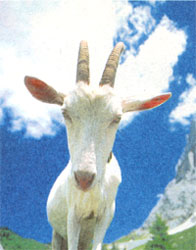

Don't Let Stones Get Your Goat
by Dr. John Dugas, DVM
December/January 1998
Protect your goat and sheep from deadly urinary stones.
I get many calls every year at my clinic from owners whose goats or sheep have urinary stones. The initial complaints range from "my goat's not acting right" to "my goat's constipated" to "my goat can't urinate." I find these animals in various conditions, from almost normal to severely ill and unable to stand. Occasionally, they are near death by the time I am called.
If left untreated, urinary stones may eventually cause a complete blockage, and the goat or sheep will suffer (and perhaps succumb to) urine poisoning. But with a change in feed, you may safeguard your animals against this potentially deadly affliction.
How Stones Form
We see the formation of stones in ruminants fed high-grain diets or diets rich in plants containing oxalates, estrogens, and silica. Alfalfa hay is an example of a plant that contains silica, which is why we generally recommend decreasing the amount of alfalfa fed to goats and sheep.
Feeds that are high in magnesium, phosphorous, and calcium can also pose problems. Although these minerals are an important part of a ruminant's diet, they can also contribute to crystal formation if fed in excess.
The pH of urine is another extremely important factor. Basic, or high, pH favors stone formation, while an acidic, or low, pH urine helps to prevent solutes from forming. This information will be helpful later on when we discuss treatment and prevention.
The final ingredient necessary for crystal formation is a nidus - some object in the urine that can serve as the center or pit of the stone. The most common nidus in urine are cells that are shed from the bladder wall or urethra as a result of normal bladder regeneration, urinary tract infections, vitamin-A deficiencies, or high-estrogen feeds.
Urinary blockage is more common in castrated males than in either intact males or females. A female goat or sheep has a much larger urethra than a male and therefore, while she may develop stones or crystals, she is able to pass them easily. I'm rarely called to treat a female goat with this condition. By contrast, the small urethra, sigmoid flexure (or curvature) of the penis, and urethral process (a small piece of tissue at the tip of the penis) all contribute to the problems male ruminants may encounter. The urethral process is broken when a male goat copulates for the first time; therefore, if a wether never copulates, the urethral process may remain, increasing the risk of a stone being lodged at the tip of the penis.
Know the Symptoms
Once crystals form in the urine, there are several potential outcomes. In some cases, an afflicted goat or sheep may start to urinate more frequently. As the condition progresses, you will notice the animal straining to urinate until the flow is reduced to a dribble, then stops altogether.
As long as the animal is able to urinate a normal amount, even if it is straining, it will likely continue to eat and drink. Once the urethra becomes partially obstructed, however, the goat or sheep will become ill from urine poisoning, which may cause a decrease in food or water intake. The animal that is completely obstructed for longer than 24 hours will usually be extremely ill, refusing all food and water. At this point, the attending veterinarian will be able to feel a large, hard bladder through the abdominal wall, which can be the source of a great deal of pain for the animal.
Prognosis and Treatment
The animal that develops urolithiasis has a fair to good prognosis if it is not yet obstructed but a poor prognosis if it is partially or completely obstructed.
In the nonobstructed cases, we prescribe antibiotics to treat the urinary tract infection that usually accompanies urinary stones. We also recommend that owners switch to a goat or sheep grain that contains ammonium chloride (NH4C1), which acidifies urine and helps prevent crystal formation. These types of feeds are difficult to find but well worth the extra effort. A couple to look for are Nutrena Top Goat or Nutrena Top Lamb.
For animals that are partially or completely obstructed, we offer several treatment options - none of which is a sure bet. First, we can anesthetize the animal (which is risky) and attempt to remove the stone from the tip of the penis, where it commonly lodges, or to manually manipulate it from the urethra.
Removing a stone from the tip of the penis is not easy, and surgery is often required. A veterinarian who attends to small ruminants should be called to treat the animal (see sidebar). Stones can also lodge in the urethral process of young male goats, necessitating the surgical removal of this tissue. Surgery is performed under various anesthetic protocols, all of which carry high risk, since sick animals are sensitive to any kind of anesthesia.
If the animal does survive the surgery, we follow up with high doses of oral ammonium chloride and prescribe a diet of grass hay and a grain containing ammonium chloride.
A second treatment option is to try a high dose of ammonium chloride, along with an antibiotic, in place of surgery. This is a more affordable but less effective remedy. It may take two to three days to work, since the stones must dissolve in the urethra and be expelled. Unfortunately, the animal may die while waiting for the stones to clear. Although this method is sometimes able to cure partial blockages, it overcomes complete blockages very rarely.
The third option is a cystotomy, abdominal surgery that involves evacuating the urinary bladder in an attempt to force the stones from the penis. Some veterinarians will perform this procedure, but others will refer a goat to a specialized referral facility out of concern over administering anesthesia and follow-up treatments. The referral facility may put in a urinary catheter following surgery to allow the bladder to repair itself and aid the animal's recovery.
The fourth and least desirable option for treating urinary stones is euthanasia. This option is offered to owners in cases with an extremely poor prognosis, an unusually high anesthesia risk, or where economic constraints prohibit all other options.
Prevention is Key
Urinary stones can be prevented in the majority of cases by following careful management practices.
First, your animals must drink an adequate amount of water. You can help to ensure this by making available a constant fresh supply. Change bucketed water frequently or use automatic waterers. Frozen water often prevents animals in colder climates from getting enough to drink. You should pay careful attention to your goats' water supply during the winter months. The use of heated waterers may be a good idea at this time of the year.
Second, the calcium to phosphorous ratio of your goat's or sheep's total ration should be 1.2:1. This ratio helps to prevent the deposition of phosphorous in the urine and therefore the formation of crystals.
Also, remember that alfalfa hay, with its high content of silica and other minerals, increases the risk of urinary stones. The animals I have seen and treated for this condition have benefitted from a reduction of alfalfa in their daily ration.
But the most important factor in preventing crystal formation is feeding a grain that contains ammonium chloride, which lowers the pH of urine and, in high doses, may actually dissolve stones. When shopping for grain, be diligent about checking the labels. Don't take the feed store owner's word for it: read the ingredients list to be sure the feed you purchase contains ammonium chloride.
Get to Know a Small-Ruminants Vet
It is important for an owner of sheep or goats to establish a relationship with a veterinarian who cares for these animals. You may have to do some research to find this type of veterinarian. Speak with other sheep and goat owners in your area to find out who they use, call your local veterinarians for a referral, or contact the American Association of Small-Ruminant Practitioners at (615) 254-3687.
Ideally, there should be a dynamic relationship between owner, veterinarian, and patient. The owner should contact the veterinarian on a regular basis about vaccinations, feeding, deworming, and other management practices. Many emergency calls may be avoided by establishing a working relationship with your veterinarian. Nevertheless, be sure to discuss with your veterinarian how his or her service works in of an emergency. This will help to ensure prompt service should your animal's life ever depend on it. - J.D.
 Urolithiasis,or urinary stones,is a devastating,often fatal, and all-too-common disease affecting goats and sheep. It is also largely preventable. |
 |
|